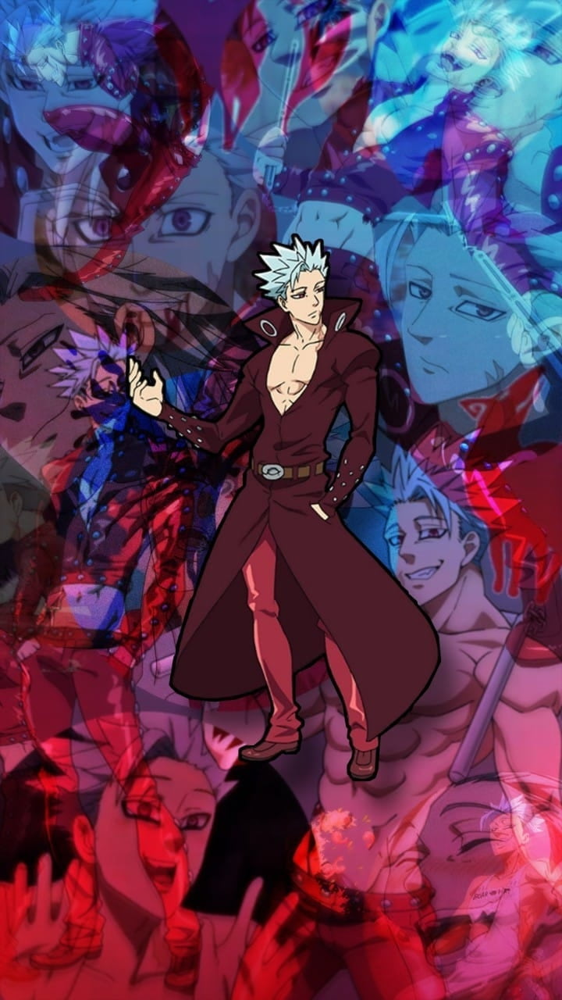

Ban
Ban, also known as the Fox's Sin of Greed, is a member of the Seven Deadly Sins. He is known for his immortality and his ability called Snatch, which allows him to steal physical objects, abilities, and even the strength of others. Ban is deeply loyal and has a strong sense of justice, despite his rough exterior and mischievous personality. He shares a deep bond with Meliodas, who is his best friend, and is in love with Elaine, a fairy and the sister of the Fairy King Harlequin.